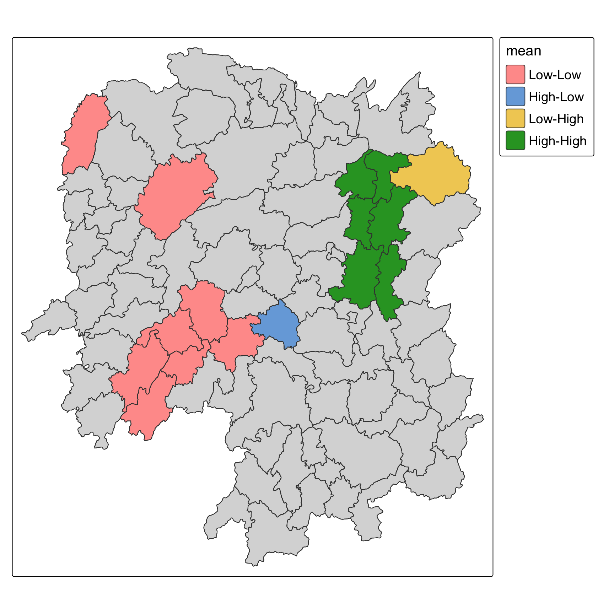

pacman::p_load(sf, sfdep, spdep, tmap, plotly, tidyverse)In-class Exercise 5
Emerging Hot Spot Analysis
1 Getting started
2 The data
2.1 County boundaries
hunan <- st_read(dsn = "data/geospatial", layer = "Hunan", quiet = TRUE) %>%
st_transform(crs = 32649)
nrow(hunan)[1] 882.2 Development indicators for 2012
hunan2012 <- read_csv("data/aspatial/Hunan_2012.csv")
hunan_GDPPC <- hunan %>%
left_join(hunan2012, by = "County") %>%
select(NAME_2, ID_3, NAME_3, ENGTYPE_3,
Shape_Leng, Shape_Area, County, GDPPC, GIO)
names(hunan_GDPPC) [1] "NAME_2" "ID_3" "NAME_3" "ENGTYPE_3" "Shape_Leng"
[6] "Shape_Area" "County" "GDPPC" "GIO" "geometry"
NoteHow the code works
The block uses three functions:
read_csv(...) # readr
left_join(..., by = "County") # dplyr
select(...) # dplyrread_csv()reads the 29 development indicators for 2012.left_join()matches each boundary to its row of indicators on the county name. All 88 names match, so no row is lost.select()keeps nine of the columns the join produces: the six geography fields, plusCounty,GDPPCandGIO. The other 26 indicators are dropped because only GDP per capita is analysed here.
select() keeps the geometry column automatically, so the result is still an sf object.
3 Spatial weights
3.1 Queen contiguity, row-standardised
wm_q <- hunan_GDPPC %>%
mutate(nb = st_contiguity(geometry),
wt = st_weights(nb, style = "W"),
.before = 1)
NoteHow the code works
The block uses three functions:
st_contiguity(geometry) # sfdep
st_weights(nb, style = "W") # sfdep
mutate(..., .before = 1) # dplyrst_contiguity()builds the neighbour list from the polygons. Queen contiguity is its default, so counties meeting only at a corner count as neighbours.queen = FALSEgives Rook contiguity instead, which drops the mean neighbour count from 5.09 to 5.00.st_weights()turns the neighbour list into weights.style = "W"row-standardises them so each county’s weights sum to 1 (default setting). The value is case-sensitive:"w"raisesStyle w invalid.mutate()addsnbandwtas list-columns, and.before = 1places them ahead in front of the other attributes.
The result is an sf object rather than a bare weights matrix. sfdep functions read nb and wt directly.
wm_q %>%
st_drop_geometry() %>%
summarise(counties = n(), mean_neighbours = mean(lengths(nb))) counties mean_neighbours
1 88 5.0909093.2 Reading the neighbour list
NoteHow to read nb and wt
nb and wt are list-columns, so each cell holds a vector rather than a single value. Row 1 is Anxiang:
| Column | Cell 1 | Reads as |
|---|---|---|
nb |
c(2, 3, 4, 57, 85) |
rows 2, 3, 4, 57 and 85 of wm_q are Anxiang’s neighbours |
wt |
c(0.2, 0.2, 0.2, 0.2, 0.2) |
the weight for each of those five neighbours, in the same order |
nbstores row positions insidewm_q, not county names and notID_3values. Row 1 is Anxiang, so the value 2 points at row 2.wtis always the same length asnb, one weight per neighbour.- Each weight is 1 divided by the number of neighbours, because the weights are row-standardised. Anxiang has 5 neighbours so each gets 0.2, Jinshi in row 3 has 4 so each gets 0.25, and the six neighbours in row 9 each get 0.1667. Every county’s weights sum to 1.
- RStudio’s viewer wraps the values in quotes, as
c("2", "3", "4", ...). That is how it displays list-column elements, not the data type.
4 Global measures of spatial autocorrelation
4.1 Moran’s I
moranI <- global_moran(wm_q$GDPPC, wm_q$nb, wm_q$wt)
glimpse(moranI)List of 2
$ I: num 0.301
$ K: num 7.64
NoteHow the code works
The block uses two functions:
global_moran(wm_q$GDPPC, wm_q$nb, wm_q$wt) # sfdep
glimpse(...) # tibbleglobal_moran()takes the variable, then the neighbour list, then the weights. It returns a list of two numbers, and reproduces the value ofspdep::moran().glimpse()prints one line per element.
I is 0.301, against a null expectation of −1/(n−1) = −0.011, so GDP per capita is positively spatially autocorrelated: neighbouring counties tend to hold similar values. The value carries no p-value of its own, because global_moran() computes the statistic only. global_moran_test() adds an analytic test and global_moran_perm() a permutation one.
K is the kurtosis of the variable, 7.64. A normal distribution has a kurtosis of 3, so GDP per capita is strongly heavy-tailed. This matters: the randomisation variance of Moran’s I is a function of the kurtosis.
4.2 Moran’s I by permutation
set.seed(1234)
moranI_perm <- global_moran_perm(wm_q$GDPPC, wm_q$nb, wm_q$wt,
nsim = 99)
moranI_perm
Monte-Carlo simulation of Moran I
data: x
weights: listw
number of simulations + 1: 100
statistic = 0.30075, observed rank = 100, p-value < 2.2e-16
alternative hypothesis: two.sided
NoteHow the code works
The block uses two functions:
set.seed(1234) # base
global_moran_perm(..., nsim = 99) # sfdepset.seed()fixes the random draw. The permutation test shuffles the values, so without a seed the p-value changes on every run.global_moran_perm()wrapsspdep::moran.mc(), which builds a reference distribution by shuffling the values across the counties while the weights stay fixed.
The number of simulations is always nsim + 1. The reference distribution holds the nsim permutations plus the observed statistic, which spdep stores last. So nsim = 99 produces 100 values, and the output says so:
number of simulations + 1: 100That “+1” sets the smallest p-value the test can report, which is 1/(nsim + 1) = 0.01. A permutation test cannot return anything more extreme than that, however strong the pattern.
⚠️ On this data the two-sided branch returns p < 2.2e-16, the stored value being exactly 0. That sits below the 0.01 floor, so it cannot be a real permutation p-value?
5 Local measures of spatial autocorrelation
5.1 Local Moran’s I
set.seed(1234)
lisa <- wm_q %>%
mutate(local_moran = local_moran(GDPPC, nb, wt, nsim = 99), .before = 1) %>%
unnest(local_moran)
NoteHow the code works
The block uses three functions:
local_moran(GDPPC, nb, wt, nsim = 99) # sfdep
mutate(..., .before = 1) # dplyr
unnest(local_moran) # tidyrlocal_moran()computes the statistic for every county in one call and returns a list per county. It takes the same three arguments as the global version, andnsimbehaves the same way.mutate()stores that list in a new column, and.before = 1puts it first.unnest()expands the list column, giving each county 11 new columns. The ones that matter here areii(the local statistic),z_ii,p_ii,p_ii_simandp_folded_sim, together withmeanandmedian, which hold the quadrant labels that the cluster map colours.
The result is an sf object of 88 rows and 24 columns.
5.2 Reading the quadrant columns
NoteHow to read mean, median and pysal
These three columns hold quadrant label for every county:
meancompares each county against the mean of GDPPC and the mean of its spatial lag. Above both is High-High, below both is Low-Low, and a county above one and below the other is High-Low or Low-High.medianapplies the identical rule using the median as the cut point.pysalis PySAL’s label for the same classification.
| Cut point | High-High | High-Low | Low-High | Low-Low |
|---|---|---|---|---|
mean |
21 | 11 | 13 | 43 |
median |
31 | 13 | 13 | 31 |
pysal |
21 | 11 | 13 | 43 |
5.3 LISA cluster map
lisa_sig <- lisa %>%
filter(p_ii_sim < 0.05)
tmap_mode("plot")
tm_shape(lisa) +
tm_polygons() +
tm_borders(fill_alpha = 0.5) +
tm_shape(lisa_sig) +
tm_polygons(fill = "mean",
fill.legend = tm_legend(text.size = 1.15, width = 6)) +
tm_borders(fill_alpha = 0.4) +
tm_layout(legend.title.size = 1.25)
NoteHow the code works
The block uses four functions:
filter(p_ii_sim < 0.05) # dplyr
tmap_mode("plot") # tmap
tm_shape(...) # tmap
tm_polygons(...) # tmapfilter()keeps the counties whose permutation p-value is below 0.05. These are the clusters. The other are not distinguishable from spatial randomness.tmap_mode("plot")switches tmap from interactive to static output.- The map is built in two layers. The first
tm_shape(lisa)draws all 88 counties as a light backdrop, so the clusters can be read against the whole province. The secondtm_shape(lisa_sig)draws only the significant counties on top, coloured by quadrant.
Both layers are needed. Without the first, the coloured counties float with nothing to place them against.